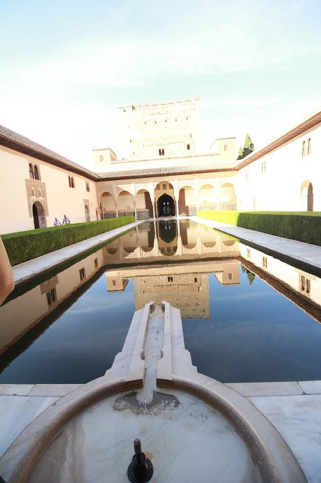

| 1 | : | Ese día nos dirigimos a Granada en coche. |
| 2 | : | El paisaje a lo largo de la autopista era solo campos de olivo, como siempre. |
| 3 | : | En el camino compramos el desayuno en una tienda de una estación de servicio y lo comimos en el coche. |
| 4 | : | Íbamos a ir a Granada directamente, pero teníamos un poco de tiempo porque el tour de la Alhambra iba a comenzar a las 15:00. |
| 5 | : | Decidimos ir un poco a Málaga. |
| 6 | : | Nos dirigimos a la casa natal de Picasso en Málaga. |
| 7 | : | Málaga es una ciudad costera mediterránea pero no podíamos ver ese paisaje desde el coche. |
| 8 | : | No podíamos encontrar un lugar para aparcar el coche y cuando lo encontramos ya eran casi las 12:00, del medio día, y teníamos poco tiempo en Málaga. |
| 9 | : | Le preguntamos al empleado del parqueo la ubicación de la casa natal de Picasso y nos dirigimos allí rápidamente. |
| 10 | : | Afortunadamente llegamos en 5 minutos y pagamos €3.00 cada uno y entramos. |
| 11 | : | Picasso nació en Málaga en 1,881 y vivió en el edificio con su familia hasta la edad de 10 años. |
| 12 | : | Su casa era una parte del apartamento y parecía un hogar de clase media. |
| 13 | : | El interior no era grande, así que pudimos verlo pronto. |
| 14 | : | Regresamos al parqueo rápidamente y nos dirigimos a Granada. |
| 15 | : | Llegamos a Granada y había muchos anuncios para ir a la Alhambra en todas partes. |
| 16 | : | Subimos una colina siguiendo los anuncios y llegamos al parqueo a las 14:00. |
| 17 | : | Llegamos al lugar de reunión 30 minutos antes de que el tour empezara. |
| 18 | : | Sin embargo había muchas personas de otros tours allí y fue muy difícil encontrar a nuestra guía. |
| 19 | : | Finalmente pudimos encontrarla y nuestra guía fue una chica que se llama Alba. |
| 20 | : | Nos dio el boleto con nuestro nombre ya impreso. |
| 21 | : | La admisión para entrar a la Alhambra era muy estricta y teníamos que informar a la compañía del tour sobre la información del pasaporte, de antemano. |
| 22 | : | Nos habían dicho que teníamos que llevar el pasaporte durante el tour. |
| 23 | : | A las 15:00 el tour comenzó. |
| 24 | : | El palacio de la Alhambra se ha registrado como Patrimonio de la Humanidad. |
| 25 | : | Hay cuatro partes que se llaman, El Palacio Nasr, El Palacio Carlos V, La Alcazaba y Generalife. |
| 26 | : | El palacio Nasr está en el centro del palacio, construido en el siglo XIV. |
| 27 | : | El palacio Carlos V fue construido por Carlos I después de la caída de granada. |
| 28 | : | La Alcazaba fue construida en el siglo IX como una fortaleza. |
| 29 | : | Generalife había sido la cabaña de verano de la familia real. |
| 30 | : | Pensé que una guía era indispensable para verlas eficientemente porque esas partes están dispersas en una gran área. |
| 31 | : | Pero era una guía en inglés, por eso había muchas palabras que no podía entender. |
| 32 | : | Había lugares como sitios arqueológicos, fortalezas y palacios, así que pienso que es un lugar interesante para observarlo lentamente. |
| 33 | : | Cada vez que entrábamos en cada edificio, teníamos que mostrar el boleto con nuestro nombre. |
| 34 | : | Algunas personas de nuestro grupo tenían que mostrar su pasaporte, cada vez. |
| 35 | : | Yo tenía curiosidad de eso. |
| 36 | : | Después del tour de 3 horas, nos dirigimos al hotel en coche. |
| 37 | : | Pero allí tampoco pudimos encontrar el hotel aunque usamos el navegador. |
| 38 | : | John y yo salimos del coche y le preguntamos a un hombre que estaba cerca. |
| 39 | : | Él sabía la ubicación del hotel, pero nos dijo que no estaba en un lugar al que pudiéramos ir en coche. |
| 40 | : | Richard había buscado un hotel con parqueo. |
| 41 | : | Regresamos al coche y nos acercamos un poco más al hotel y aparcamos. |
| 42 | : | John y yo salimos del coche otra vez y estábamos buscando el hotel a pie. |
| 43 | : | Finalmente pudimos encontrarlo y estaba a 5 minutos del lugar donde habíamos aparcado, pero había muchos callejones estrechos, de una sola vía. |
| 44 | : | Fuimos a la recepción del hotel y preguntamos cómo llegar allí en coche. |
| 45 | : | El recepcionista nos dio un mapa detallado y marcó la ruta para conducir. |
| 46 | : | Aunque fue un gran desvío, por si acaso volvimos al coche por esa ruta. |
| 47 | : | Gracias a eso pudimos llegar al hotel en coche. |
| 48 | : | Luego el empleado del hotel movió el coche al parqueo. |
| 49 | : | Oyo Hotel Plaza Nueva no era grande, pero era moderno y estaba en un lugar muy conveniente. |
| 50 | : | No habíamos almorzado y teníamos hambre así que dejamos nuestro equipaje y salimos para cenar. |
| 51 | : | Le preguntamos al recepcionista sobre el restaurante recomendado y nos dijo que él nos guiaría allí. |
| 52 | : | Salimos del hotel y fuimos a la calle principal y había una plaza. |
| 53 | : | Muchos turistas estaban cenando en los asientos al aire libre, enfrente de varios restaurantes. |
| 54 | : | Parecía que era el centro de Granada. |
| 55 | : | Era una ciudad muy bonita y atractiva, por eso hubiera querido tener más tiempo en la ciudad. |
| 56 | : | Después de pasar por la plaza, anduvimos y llegamos a un restaurante. |
| 57 | : | En la recepción de nuestro hotel, estaba solo el hombre, por eso él regresó rápidamente. |
| 58 | : | Era un restaurante muy elegante, como un museo. |
| 59 | : | Parecía un poco caro, así que pedimos agua tónica y unas tapas, primero. |
| 60 | : | Pero teníamos mucha hambre entonces cada uno pidió comida. |
| 61 | : | Comí pescado y estaba muy rico y el precio que nos había preocupado no era tan alto. |
| 62 | : | Él nos había recomendado un muy buen restaurante. |
| 63 | : | Luego caminamos un poco por la ciudad y fuimos a una tienda para comer churros. |
| 64 | : | Los empleados eran muy agradables, prepararon deliciosos churros. |
| 65 | : | Todos los españoles eran muy amables, pero creo que especialmente los andaluces eran muy alegres y amables. |
| 66 | : | Estábamos contentos y volvimos al hotel. |
| 67 | : | Hacía mucho calor durante el día, pero había un poco de frío por la noche. |
| 68 | : | Estábamos cansados y dormimos bien ese día. |
{kind=link}
{kind=link}
{kind=link}
{kind=link}
{kind=link}
{kind=link}
{kind=link}